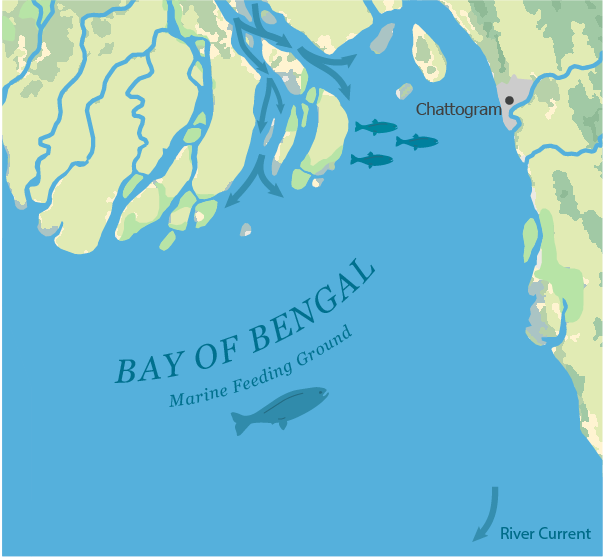
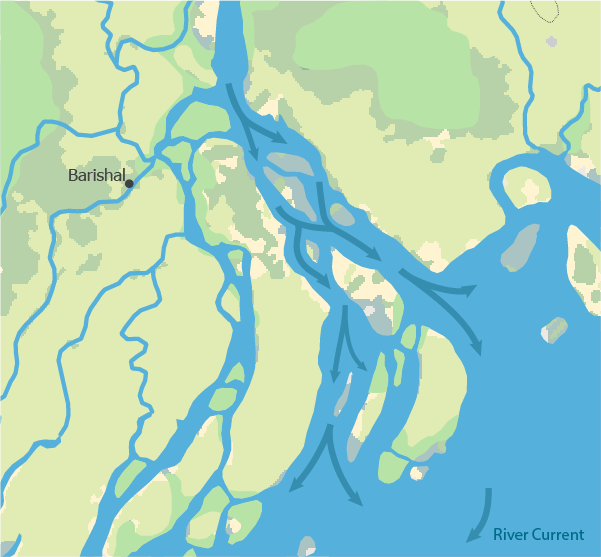
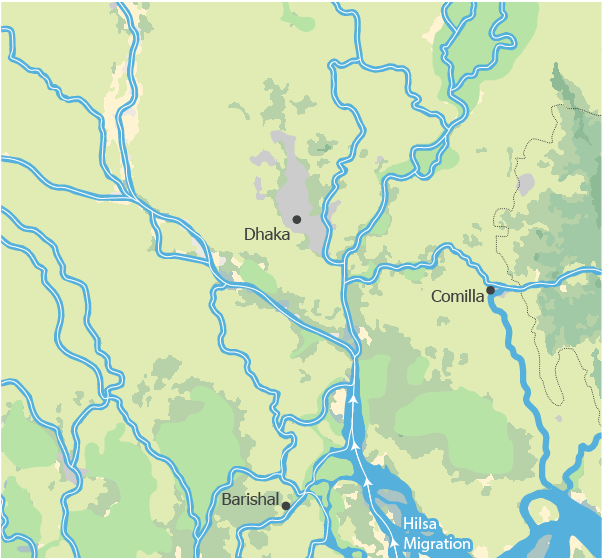

The Monsoon Migration of Hilsa in Bangladesh
Claire Keef
The migration of Hilsa is a seasonal movement that links marine, estuarine, and freshwater environments in the northern Bay of Bengal and Meghna River system. This map shows the spatial progression of hilsa, a fish local to the Bay of Bengal, migrating from marine feeding grounds to river spawning and nursery areas. This migration is influenced by various human and environmental factors along the route.

The northern Bay of Bengal serves as the primary marine feeding ground for hilsa. Monsoon-associated (seasonal wind-driven rains that increase river discharge) sediment discharge and nutrients drive a high primary productivity in these waters. During this phase, hilsa accumulate energy from lipids that are essential for long-distance migration and reproduction.

Hilsa are anadromous, meaning they spend most of their adult life in marine environments, migrating to freshwater environments to spawn. When the rivers achieve lower salinity and higher water clarity, hilsa are stimulated to move upstream. This takes place at the Meghna estuary (where freshwater mixes with saltwater), one of the largest estuarine systems in the world, connecting the Bay of Bengal to Bangladesh’s river network.

Adult hilsa migrate upstream through the Meghna River and its channels, swimming against the strong currents from the monsoon. Migration often occurs in large groups, a behavior that enhances orientation, reduces predation risk, and improves energetic efficiency. This is an intensive phase that relies exclusively on the energy accumulated during marine feeding. Overall migration success is closely related to the conditions in the Bay of Bengal before the fish even enter the river system.

Spawning occurs primarily in freshwater during peak monsoon months. Eggs are released into the flowing river, where they drift downstream seeking out lower-energyenvironments, like floodplains and secondary river channels. These are critical nursery habitats, providing protection from the strong currents during early stages of hilsa life.
Human Impact
This brings us back down to the Bay of Bengal. Young hilsa migrate downstream to marine environments. This migration coincides with fishing season and habitat disruption, resulting in a high mortality rate among young hilsa. To mitigate this, Bangladesh has a fishing ban enforced during the peak season of September and October, in which the capture of both juvenile and adult hilsa is banned. Altogether, this monsoon-driven cycle illustrates the life cycle of hilsa fish and their dynamic relationship with the river, bay, and seasonal change.